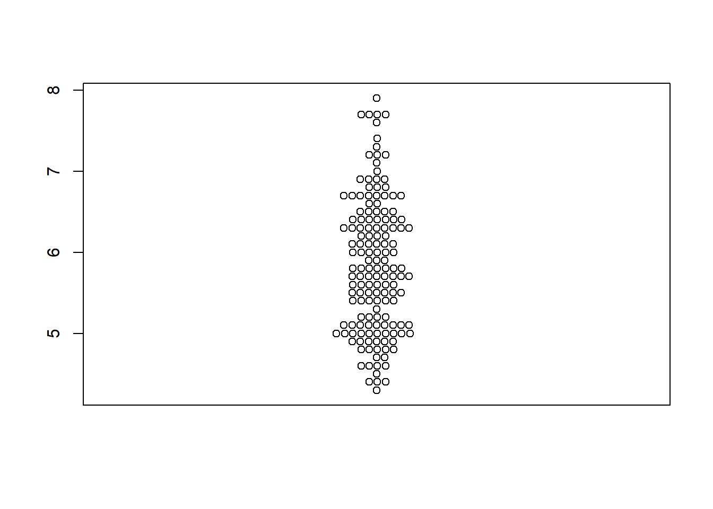
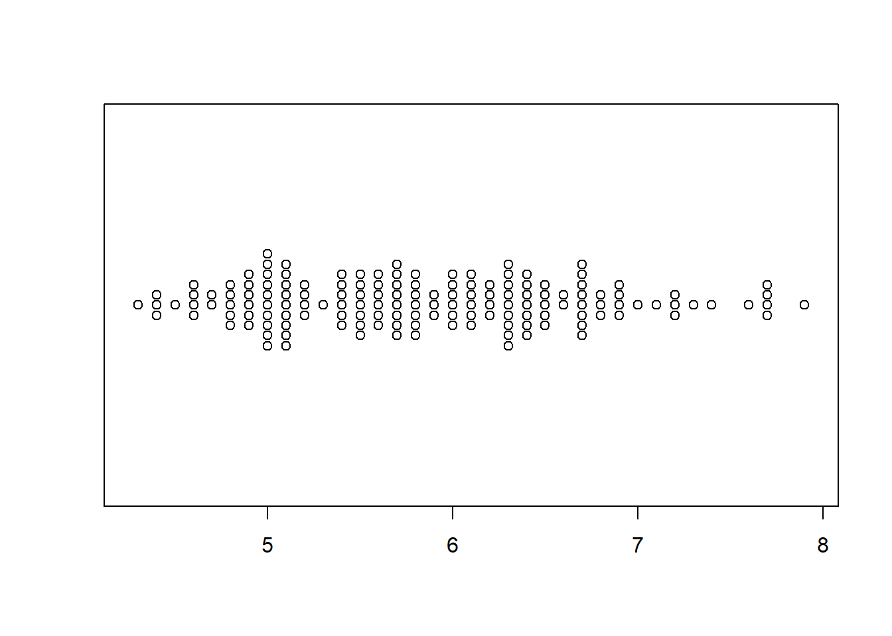
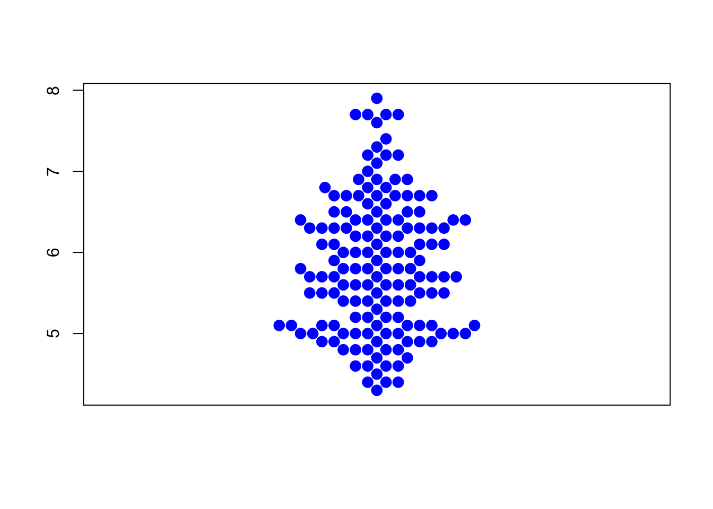
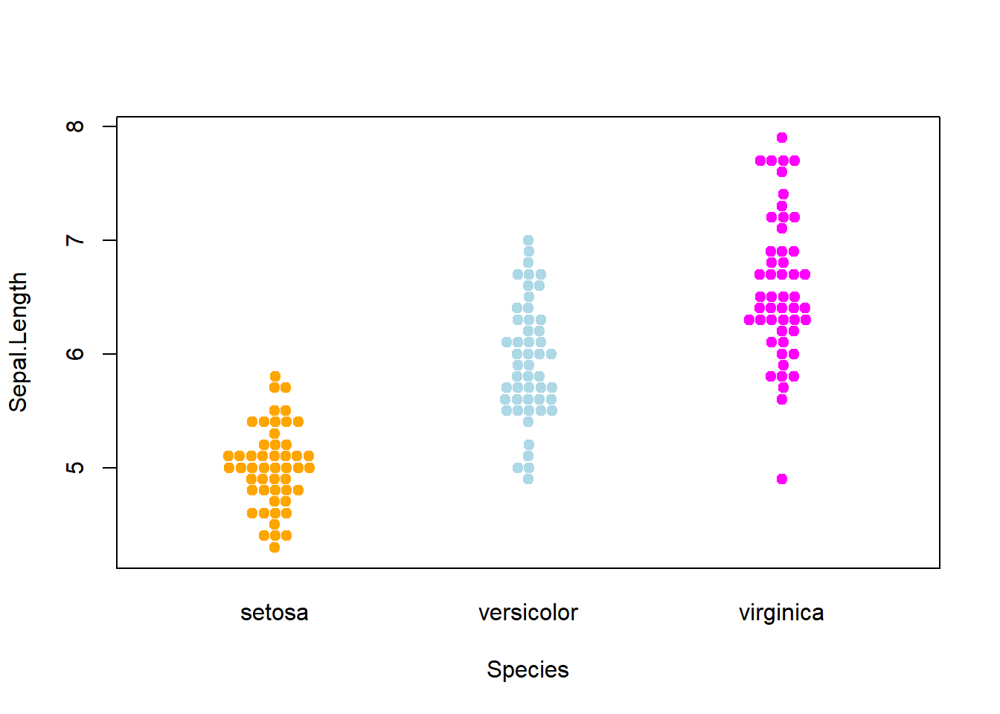
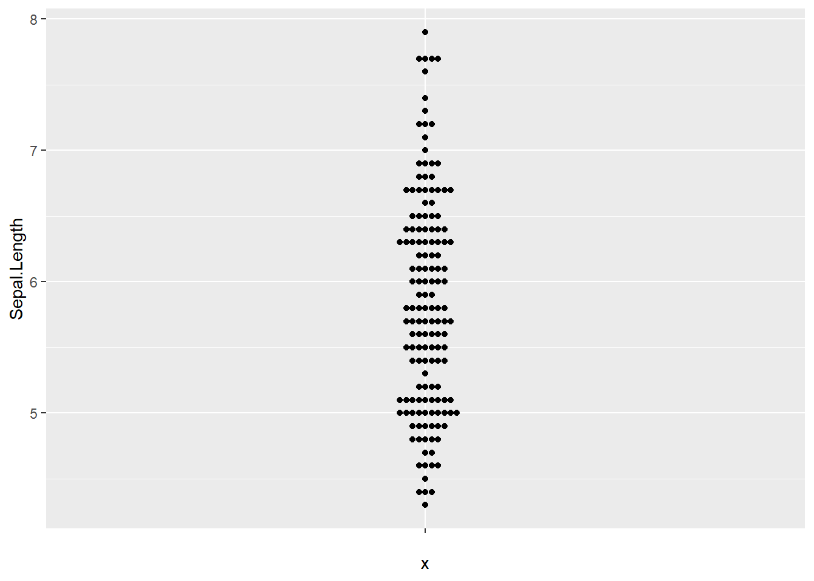
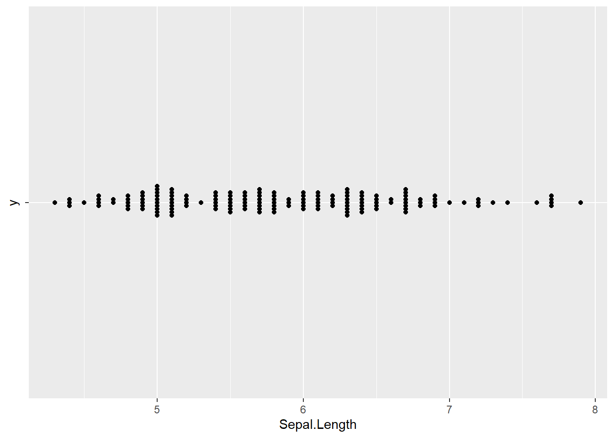
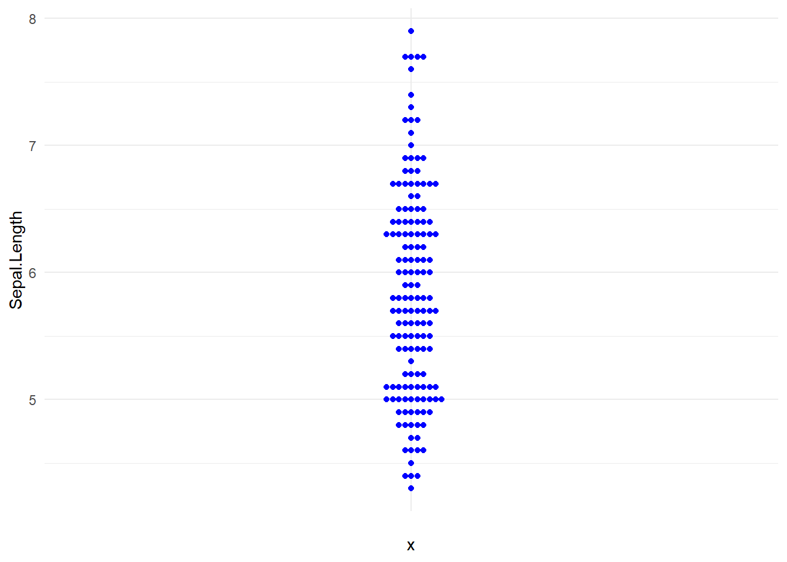
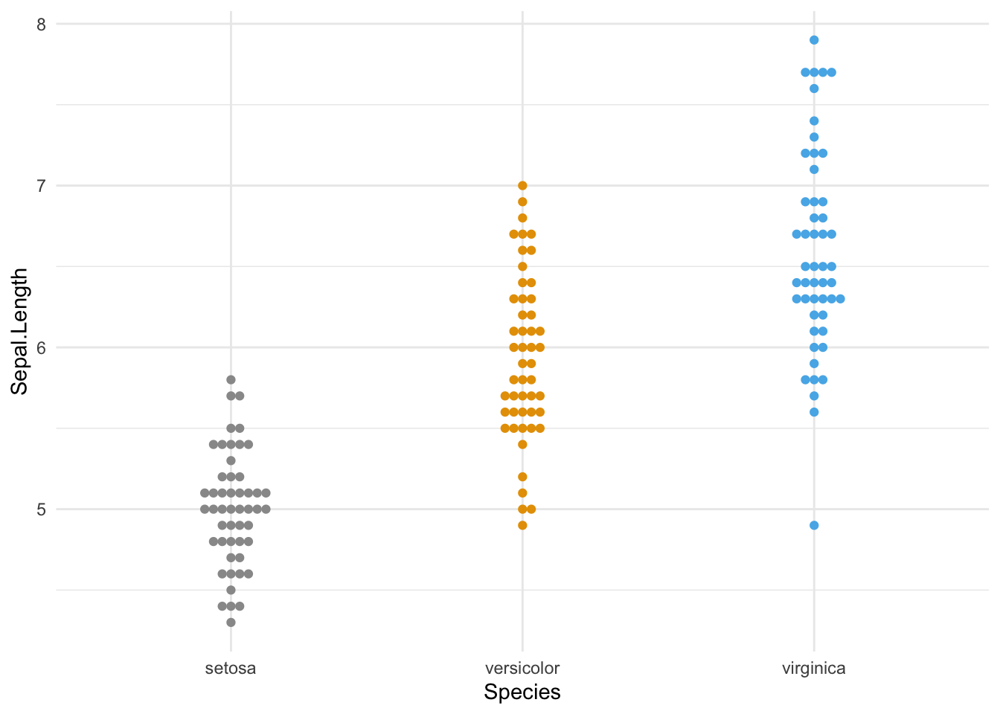
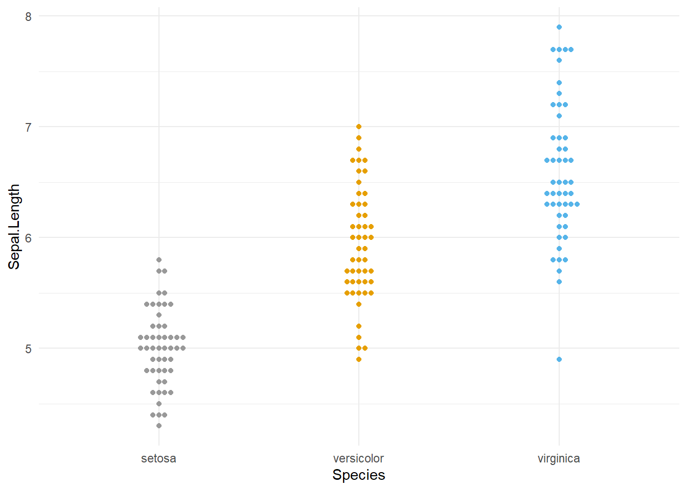

Show/Hide Code
library(beeswarm) # beeswarm包,绘制群峰图
library(ggplot2)
library(ggbeeswarm) # ggbeeswarm包,基于ggplot2的群峰图群蜂图,像蜂群一样展示数据,使用R包beeswarm 和 ggbeeswarm 包实现。
library(beeswarm) # beeswarm包,绘制群峰图
library(ggplot2)
library(ggbeeswarm) # ggbeeswarm包,基于ggplot2的群峰图irisiris数据集，又称为“安德森鸢尾花卉数据集”（Anderson’s Iris data set），是 R 语言内置的一个“玩具”数据集，也是统计学、数据科学和机器学习领域中使用最频繁、最著名的示例数据集之一。
它包含了150个鸢尾花样本的测量数据，这150个样本分别来自三个不同的鸢尾花品种：山鸢尾 (Setosa)、变色鸢尾 (Versicolor) 和 维吉尼亚鸢尾 (Virginica)，每个品种各50个样本。
data(iris) # 载入内置数据集
knitr::kable(head(iris))| Sepal.Length | Sepal.Width | Petal.Length | Petal.Width | Species |
|---|---|---|---|---|
| 5.1 | 3.5 | 1.4 | 0.2 | setosa |
| 4.9 | 3.0 | 1.4 | 0.2 | setosa |
| 4.7 | 3.2 | 1.3 | 0.2 | setosa |
| 4.6 | 3.1 | 1.5 | 0.2 | setosa |
| 5.0 | 3.6 | 1.4 | 0.2 | setosa |
| 5.4 | 3.9 | 1.7 | 0.4 | setosa |
群峰图使用的数据集iris
iris数据集共有5个变量:
beeswarm(iris$Sepal.Length)
beeswarm(iris$Sepal.Length, horizontal=TRUE)
beeswarm(
iris$Sepal.Length,
pch=16, # 点的形状
col='blue', # 点的颜色
cex=1.5, # 点的大小
)
beeswarm(
Sepal.Length ~ Species,
data=iris,
col=c("orange", "lightblue", "magenta"),
pch = 19, # fill the dots
# corral = "gutter" # 使用“gutter”方法来处理重叠,边缘裁切
)
更多可以更改的参数见beeswarm包文档。
ggbeeswarm包是ggplot2的扩展包，有两个核心函数:
geom_beeswarm()函数创建群峰图。geom_quasirandom()函数创建准随机分布图,这是一种介于蜂群图和抖动图之间的混合图。ggplot(iris,aes(y=Sepal.Length,x='')) +
geom_beeswarm()
ggplot(iris,aes(x=Sepal.Length,y='')) +
geom_beeswarm()
ggplot(iris,aes(y=Sepal.Length,x='')) +
geom_beeswarm(color='blue') +
theme_minimal()
还有更多可以通过“method”参数来控制的群峰图方法,例如"center"、"square"、"hexagon"等。 见ggbeeswarm包文档。
ggplot(iris,aes(x=Species, y=Sepal.Length, colour=Species)) +
geom_beeswarm() +
theme(legend.position = "none")
ggplot(iris,aes(x=Species, y=Sepal.Length, colour=Species)) +
geom_beeswarm() +
scale_color_manual(values=c("#999999", "#E69F00", "#56B4E9")) +
theme_minimal() +
theme(legend.position = "none")